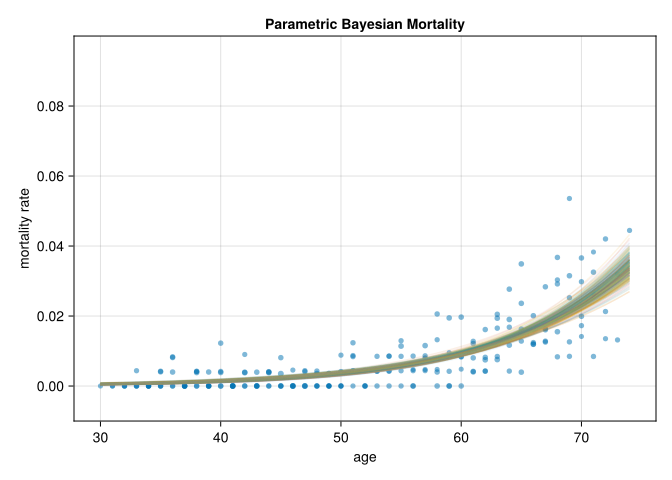
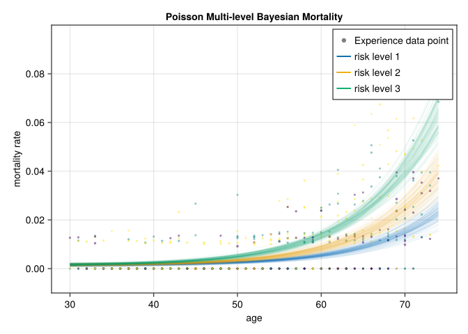

using MortalityTables
using Turing
using DataFramesMeta
using MCMCChains
using LinearAlgebra
using CairoMakie
using StatsBase31 Bayesian Mortality Modeling
“After a year of intense mental struggle, however, [Arthur Bailey] realized to his consternation that actuarial sledgehammering worked. He even preferred [the Bayesian underpinnings of credibility theory] to the elegance of frequentism. He positively liked formulae that described ‘actual data. . . . I realized that the hard-shelled underwriters were recognizing certain facts of life neglected by the statistical theorists.’ He wanted to give more weight to a large volume of data than to the frequentists’ small sample; doing so felt surprisingly ‘logical and reasonable.’ He concluded that only a ‘suicidal’ actuary would use Fisher’s method of maximum likelihood, which assigned a zero probability to nonevents.” - Sharon Bertsch McGrayne, Excerpt From The Theory That Would Not Die
31.1 Chapter Overview
An example of using a Bayesian MCMC approach with Turing.jl to fit a mortality curve to sample data, with multi-level models and censored data.
31.2 Generating fake data
The problem of interest is to look at mortality rates, which are given in terms of exposures (whether or not a life experienced a death in a given year).
We’ll grab some example rates from an insurance table, which has a “selection” component: When someone enters observation, say at age 50, their mortality is path dependent (so someone who started being observed at 50 will have a different risk/mortality rate at age 55 than someone who started being observed at 45).
Additionally, there may be additional groups of interest, such as:
- high/medium/low risk classification
- sex
- group (e.g. company, data source, etc.)
- type of insurance product offered
The example data will start with only the risk classification above.
n = 10_000
inforce = [(issue_age=rand(30:70), risk_level=rand(1:3)) for _ in 1:n]10000-element Vector{@NamedTuple{issue_age::Int64, risk_level::Int64}}:
(issue_age = 41, risk_level = 1)
(issue_age = 61, risk_level = 3)
(issue_age = 47, risk_level = 2)
(issue_age = 51, risk_level = 1)
(issue_age = 66, risk_level = 2)
(issue_age = 30, risk_level = 2)
(issue_age = 65, risk_level = 3)
(issue_age = 45, risk_level = 2)
(issue_age = 51, risk_level = 2)
(issue_age = 45, risk_level = 3)
(issue_age = 61, risk_level = 1)
(issue_age = 36, risk_level = 2)
(issue_age = 58, risk_level = 1)
⋮
(issue_age = 53, risk_level = 1)
(issue_age = 48, risk_level = 3)
(issue_age = 69, risk_level = 3)
(issue_age = 70, risk_level = 2)
(issue_age = 70, risk_level = 2)
(issue_age = 64, risk_level = 2)
(issue_age = 33, risk_level = 1)
(issue_age = 55, risk_level = 1)
(issue_age = 62, risk_level = 2)
(issue_age = 61, risk_level = 3)
(issue_age = 50, risk_level = 3)
(issue_age = 35, risk_level = 2)tbl_name = "2001 VBT Residual Standard Select and Ultimate - Male Nonsmoker, ANB"
base_table = MortalityTables.table(tbl_name)
# Risk level multipliers: 1 = preferred (0.7x), 2 = standard (1.0x), 3 = substandard (1.5x)
const RISK_MULTIPLIERS = (0.7, 1.0, 1.5)
function tabular_mortality(params, issue_age, att_age, risk_level)
params.ultimate[att_age] * RISK_MULTIPLIERS[risk_level]
endtabular_mortality (generic function with 1 method)"""
Simulate mortality outcomes for a portfolio of policies.
Returns a DataFrame with one row per policy-year exposure.
"""
function model_outcomes(inforce, assumption, assumption_params; n_years=5)
# Pre-allocate result vectors
result_issue_age = Int[]
result_risk_level = Int[]
result_att_age = Int[]
result_death = Int[]
sizehint!(result_issue_age, length(inforce) * n_years)
sizehint!(result_risk_level, length(inforce) * n_years)
sizehint!(result_att_age, length(inforce) * n_years)
sizehint!(result_death, length(inforce) * n_years)
for pol in inforce
for t in 1:n_years
att_age = pol.issue_age + t - 1
q = assumption(assumption_params, pol.issue_age, att_age, pol.risk_level)
died = rand() < q
push!(result_issue_age, pol.issue_age)
push!(result_risk_level, pol.risk_level)
push!(result_att_age, att_age)
push!(result_death, died ? 1 : 0)
# If died, no more exposures for this policy
died && break
end
end
DataFrame(
issue_age=result_issue_age,
risk_level=result_risk_level,
att_age=result_att_age,
death=result_death,
exposures=ones(Int, length(result_death)) # each row is one exposure
)
end
exposures = model_outcomes(inforce, tabular_mortality, base_table)
# Aggregate by issue_age and att_age
data = @chain exposures begin
groupby([:issue_age, :att_age])
@combine(:exposures = length(:death),
:deaths = sum(:death),
:fraction = sum(:death) / length(:death))
end
# Aggregate including risk_level for multi-level modeling
data2 = @chain exposures begin
groupby([:issue_age, :att_age, :risk_level])
@combine(:exposures = length(:death),
:deaths = sum(:death),
:fraction = sum(:death) / length(:death))
end615×6 DataFrame
590 rows omitted
| Row | issue_age | att_age | risk_level | exposures | deaths | fraction |
|---|---|---|---|---|---|---|
| Int64 | Int64 | Int64 | Int64 | Int64 | Float64 | |
| 1 | 30 | 30 | 1 | 69 | 0 | 0.0 |
| 2 | 30 | 30 | 2 | 81 | 0 | 0.0 |
| 3 | 30 | 30 | 3 | 68 | 0 | 0.0 |
| 4 | 30 | 31 | 1 | 69 | 0 | 0.0 |
| 5 | 30 | 31 | 2 | 81 | 0 | 0.0 |
| 6 | 30 | 31 | 3 | 68 | 0 | 0.0 |
| 7 | 30 | 32 | 1 | 69 | 0 | 0.0 |
| 8 | 30 | 32 | 2 | 81 | 0 | 0.0 |
| 9 | 30 | 32 | 3 | 68 | 0 | 0.0 |
| 10 | 30 | 33 | 1 | 69 | 0 | 0.0 |
| 11 | 30 | 33 | 2 | 81 | 0 | 0.0 |
| 12 | 30 | 33 | 3 | 68 | 0 | 0.0 |
| 13 | 30 | 34 | 1 | 69 | 0 | 0.0 |
| ⋮ | ⋮ | ⋮ | ⋮ | ⋮ | ⋮ | ⋮ |
| 604 | 70 | 71 | 1 | 75 | 1 | 0.0133333 |
| 605 | 70 | 71 | 2 | 93 | 1 | 0.0107527 |
| 606 | 70 | 71 | 3 | 69 | 1 | 0.0144928 |
| 607 | 70 | 72 | 1 | 74 | 1 | 0.0135135 |
| 608 | 70 | 72 | 2 | 92 | 2 | 0.0217391 |
| 609 | 70 | 72 | 3 | 68 | 6 | 0.0882353 |
| 610 | 70 | 73 | 1 | 73 | 5 | 0.0684932 |
| 611 | 70 | 73 | 2 | 90 | 3 | 0.0333333 |
| 612 | 70 | 73 | 3 | 62 | 8 | 0.129032 |
| 613 | 70 | 74 | 1 | 68 | 1 | 0.0147059 |
| 614 | 70 | 74 | 2 | 87 | 1 | 0.0114943 |
| 615 | 70 | 74 | 3 | 54 | 2 | 0.037037 |
31.3 1: A single binomial parameter model
Estimate \(q\), the average mortality rate, not accounting for any variation within the population/sample. Our model is defined as a Beta prior on \(q\) with a Binomial likelihood:
\[ \begin{aligned} q &\sim \text{Beta}(1,1) \\ p(\text{death}) &\sim \text{Binomial}(n, q) \end{aligned} \]
@model function mortality(exposures, deaths)
q ~ Beta(1, 1)
# Vectorized: observe all deaths at once
for i in eachindex(deaths)
deaths[i] ~ Binomial(exposures[i], q)
end
end
m1 = mortality(data.exposures, data.deaths)DynamicPPL.Model{typeof(mortality), (:exposures, :deaths), (), (), Tuple{Vector{Int64}, Vector{Int64}}, Tuple{}, DynamicPPL.DefaultContext, false}(Main.mortality, (exposures = [218, 218, 218, 218, 218, 235, 235, 235, 235, 235 … 271, 267, 262, 259, 251, 244, 237, 234, 225, 209], deaths = [0, 0, 0, 0, 0, 0, 0, 0, 0, 1 … 4, 5, 3, 8, 8, 7, 3, 9, 16, 4]), NamedTuple(), DynamicPPL.DefaultContext())31.3.1 Sampling from the posterior
We use a No-U-Turn-Sampler (NUTS) technique to sample multiple chains at once:
num_chains = 4
chain = sample(m1, NUTS(), MCMCThreads(), 400, num_chains)Chains MCMC chain (400×15×4 Array{Float64, 3}):
Iterations = 201:1:600
Number of chains = 4
Samples per chain = 400
Wall duration = 1.18 seconds
Compute duration = 4.71 seconds
parameters = q
internals = n_steps, is_accept, acceptance_rate, log_density, hamiltonian_energy, hamiltonian_energy_error, max_hamiltonian_energy_error, tree_depth, numerical_error, step_size, nom_step_size, logprior, loglikelihood, logjoint
Use `describe(chains)` for summary statistics and quantiles.Here, we have asked for the outcomes to be modeled via a single parameter for the population. We see that the posterior distribution of \(q\) is very close to the overall population mortality rate:
# Posterior mean of q should be close to the pooled fraction
sum(data.deaths) / sum(data.exposures)0.007585899152164213However, we can see that the sampling of possible posterior parameters doesn’t really fit the data very well since our model was so simplified. The lines represent the posterior binomial probability.
This is saying that for the observed data, if there really is just a single probability p that governs the true process that came up with the data, there’s a pretty narrow range of values it could possibly be:
let
data_weight = sqrt.(data.exposures) / 2
f = Figure()
ax = Axis(f[1, 1],
xlabel="age",
ylabel="mortality rate",
limits=(nothing, nothing, -0.01, 0.10),
title="Single-parameter Bayesian Mortality"
)
scatter!(ax,
data.att_age,
data.fraction,
markersize=data_weight,
color=(:blue, 0.5),
label="Experience data (size ~ exposure)")
# Sample from posterior once (more efficient than sampling 1 at a time)
n_samples = 300
q_posterior = vec(Array(sample(chain, n_samples)[:q]))
# Draw horizontal lines for each posterior sample
for q in q_posterior
hlines!(ax, [q], color=(:grey, 0.1))
end
f
end
31.4 2. Parametric model
In this example, we utilize a MakehamBeard parameterization because it’s already very similar in form to a logistic function. This is important because our desired output is a probability (i.e., the probability of a death at a given age), so the value must be constrained to be in the interval between zero and one.
The prior values for a, b, c, and k are chosen to constrain the hazard (mortality) rate to be between zero and one.
This isn’t an ideal parameterization (e.g. we aren’t including information about the select underwriting period), but is an example of utilizing Bayesian techniques on life experience data.
@model function mortality2(ages, exposures, deaths)
a ~ Exponential(0.1)
b ~ Exponential(0.1)
c = 0.0
k ~ truncated(Exponential(1), 1, Inf)
# Create parametric mortality model once
m = MortalityTables.MakehamBeard(; a, b, c, k)
# Observe deaths for each age/exposure combination
for i in eachindex(deaths)
q = MortalityTables.hazard(m, ages[i])
if !isfinite(q) || q < 0 || q > 1
Turing.@addlogprob! -Inf
return
end
deaths[i] ~ Binomial(exposures[i], q)
end
endmortality2 (generic function with 2 methods)
TipGuarding against invalid probabilities
During sampling, NUTS uses gradient-based proposals that can explore extreme parameter values. For example, a large b may cause exp(b * age) to overflow, producing a NaN hazard rate. Since Binomial(n, p) requires 0 ≤ p ≤ 1, passing an invalid value would throw a DomainError. The guard clause handles this by calling Turing.@addlogprob! -Inf, which sets the log-density to negative infinity and tells the sampler to reject that proposal. This is the idiomatic Turing.jl pattern for enforcing domain constraints that arise from complex likelihood computations.
We combine the model with the data and sample from the posterior using a similar call as before:
m2 = mortality2(data.att_age, data.exposures, data.deaths)
chain2 = sample(m2, NUTS(), MCMCThreads(), 400, num_chains)Chains MCMC chain (400×17×4 Array{Float64, 3}):
Iterations = 201:1:600
Number of chains = 4
Samples per chain = 400
Wall duration = 3.86 seconds
Compute duration = 14.39 seconds
parameters = a, b, k
internals = n_steps, is_accept, acceptance_rate, log_density, hamiltonian_energy, hamiltonian_energy_error, max_hamiltonian_energy_error, tree_depth, numerical_error, step_size, nom_step_size, logprior, loglikelihood, logjoint
Use `describe(chains)` for summary statistics and quantiles.31.4.1 Plotting samples from the posterior
We can see that the sampling of possible posterior parameters fits the data well:
let
data_weight = sqrt.(data.exposures) / 2
f = Figure()
ax = Axis(f[1, 1],
xlabel="age",
ylabel="mortality rate",
limits=(nothing, nothing, -0.01, 0.10),
title="Parametric Bayesian Mortality"
)
scatter!(ax,
data.att_age,
data.fraction,
markersize=data_weight,
color=(:blue, 0.5),
label="Experience data (size ~ exposure)")
# Sample from posterior once (much faster than sampling 1 at a time in loop)
n_samples = 300
posterior = sample(chain2, n_samples)
a_samples = vec(Array(posterior[:a]))
b_samples = vec(Array(posterior[:b]))
k_samples = vec(Array(posterior[:k]))
ages = sort!(unique(data.att_age))
for i in 1:n_samples
m = MortalityTables.MakehamBeard(; a=a_samples[i], b=b_samples[i], c=0.0, k=k_samples[i])
qs = MortalityTables.hazard.(m, ages)
lines!(ax, ages, qs, color=(:grey, 0.1))
end
f
end
Recall that the lines are not plotting the possible outcomes of the claim rates, but the mean claim rate for the given age.
31.5 3. Multi-level model
This model extends the prior to create a multi-level model. Each risk class (risk_level) gets its own \(a\) parameter in the MakehamBeard model. The prior for \(a_i\) is determined by the hyper-parameter \(\bar{a}\).
@model function mortality3(ages, exposures, risk_levels, deaths, n_risk_levels)
b ~ Exponential(0.1)
ā ~ Exponential(0.1)
a ~ filldist(Exponential(ā), n_risk_levels)
c = 0.0
k ~ truncated(Exponential(1), 1, Inf)
# Observe deaths for each row
for i in eachindex(deaths)
m = MortalityTables.MakehamBeard(; a=a[risk_levels[i]], b, c, k)
q = MortalityTables.hazard(m, ages[i])
if !isfinite(q) || q < 0 || q > 1
Turing.@addlogprob! -Inf
return
end
deaths[i] ~ Binomial(exposures[i], q)
end
end
n_risk_levels = length(unique(data2.risk_level))
m3 = mortality3(data2.att_age, data2.exposures, data2.risk_level, data2.deaths, n_risk_levels)
chain3 = sample(m3, NUTS(), 1000)
summarize(chain3)parameters mean std mcse ess_bulk ess_tail rhat e ⋯ Symbol Float64 Float64 Float64 Float64 Float64 Float64 ⋯ b 0.0934 0.0057 0.0003 314.9468 440.3180 1.0070 ⋯ ā 0.0001 0.0002 0.0000 511.4813 448.5876 1.0004 ⋯ a[1] 0.0000 0.0000 0.0000 337.8657 505.3573 1.0048 ⋯ a[2] 0.0000 0.0000 0.0000 315.8095 454.4266 1.0105 ⋯ a[3] 0.0001 0.0000 0.0000 329.8736 486.1069 1.0060 ⋯ k 1.8970 0.8496 0.0383 287.6231 211.4789 1.0039 ⋯ 1 column omitted
let
colors = Makie.wong_colors()
data_weight = sqrt.(data2.exposures)
p, ax, _ = scatter(
data2.att_age,
data2.fraction,
markersize=data_weight,
alpha=0.5,
color=[(colors[c], 0.7) for c in data2.risk_level],
label="Experience data point",
axis=(
xlabel="age",
limits=(nothing, nothing, -0.01, 0.10),
ylabel="mortality rate",
title="Multi-level Bayesian Mortality"
)
)
# Sample from posterior once (much faster than sampling 1 at a time in loop)
n_samples = 100
posterior = sample(chain3, n_samples)
b_samples = vec(Array(posterior[:b]))
k_samples = vec(Array(posterior[:k]))
ages = sort!(unique(data2.att_age))
for r in 1:3
a_samples = vec(Array(posterior[Symbol("a[$r]")]))
for i in 1:n_samples
m = MortalityTables.MakehamBeard(; a=a_samples[i], b=b_samples[i], c=0.0, k=k_samples[i])
qs = MortalityTables.hazard.(m, ages)
lines!(ages, qs, label="risk level $r", alpha=0.2, color=(colors[r], 0.2))
end
end
axislegend(ax, merge=true)
p
end
Again, the lines are not plotting the possible outcomes of the claim rates, but the mean claim rate for the given age and risk class.
31.6 Handling non-unit exposures
The key is to use the Poisson distribution, which is a limiting approximation to the Binomial distribution:
@model function mortality4(ages, exposures, risk_levels, deaths, n_risk_levels)
b ~ Exponential(0.1)
ā ~ Exponential(0.1)
a ~ filldist(Exponential(ā), n_risk_levels)
c ~ Beta(4, 18)
k ~ truncated(Exponential(1), 1, Inf)
# Observe deaths for each row using Poisson likelihood
for i in eachindex(deaths)
m = MortalityTables.MakehamBeard(; a=a[risk_levels[i]], b, c, k)
q = MortalityTables.hazard(m, ages[i])
deaths[i] ~ Poisson(exposures[i] * q)
end
end
m4 = mortality4(data2.att_age, data2.exposures, data2.risk_level, data2.deaths, n_risk_levels)
chain4 = sample(m4, NUTS(), 1000)Chains MCMC chain (1000×21×1 Array{Float64, 3}):
Iterations = 501:1:1500
Number of chains = 1
Samples per chain = 1000
Wall duration = 26.98 seconds
Compute duration = 26.98 seconds
parameters = b, ā, a[1], a[2], a[3], c, k
internals = n_steps, is_accept, acceptance_rate, log_density, hamiltonian_energy, hamiltonian_energy_error, max_hamiltonian_energy_error, tree_depth, numerical_error, step_size, nom_step_size, logprior, loglikelihood, logjoint
Use `describe(chains)` for summary statistics and quantiles.# Extract posterior means for risk factors and compute relative factors
risk_factors4 = [mean(chain4[Symbol("a[$f]")]) for f in 1:3]
println("Risk factors relative to standard (level 2): ", risk_factors4 ./ risk_factors4[2])
let
colors = Makie.wong_colors()
data_weight = sqrt.(data2.exposures) / 2
p, ax, _ = scatter(
data2.att_age,
data2.fraction,
markersize=data_weight,
alpha=0.5,
color=data2.risk_level,
label="Experience data point",
axis=(
xlabel="age",
limits=(nothing, nothing, -0.01, 0.10),
ylabel="mortality rate",
title="Poisson Multi-level Bayesian Mortality"
)
)
# Sample from posterior once (much faster than sampling 1 at a time in loop)
n_samples = 100
posterior = sample(chain4, n_samples)
b_samples = vec(Array(posterior[:b]))
c_samples = vec(Array(posterior[:c]))
k_samples = vec(Array(posterior[:k]))
ages = sort!(unique(data2.att_age))
for r in 1:3
a_samples = vec(Array(posterior[Symbol("a[$r]")]))
for i in 1:n_samples
m = MortalityTables.MakehamBeard(; a=a_samples[i], b=b_samples[i], c=c_samples[i], k=k_samples[i])
qs = MortalityTables.hazard.(m, ages)
lines!(ages, qs, label="risk level $r", alpha=0.2, color=(colors[r], 0.2))
end
end
axislegend(ax, merge=true)
p
endRisk factors relative to standard (level 2): [0.7172377542550609, 1.0, 1.69632476350233]
31.7 Model Predictions
We can generate predictive estimates by passing a vector of missing in place of the outcome variables and then calling predict.
We get a table of values where each row is the prediction implied by the corresponding chain sample, and the columns are the predicted value for each of the outcomes in our original dataset.
# Create model with missing deaths to generate predictions
pred_model = mortality4(
data2.att_age,
data2.exposures,
data2.risk_level,
fill(missing, length(data2.deaths)),
n_risk_levels
)
preds = predict(pred_model, chain4);